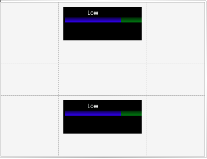
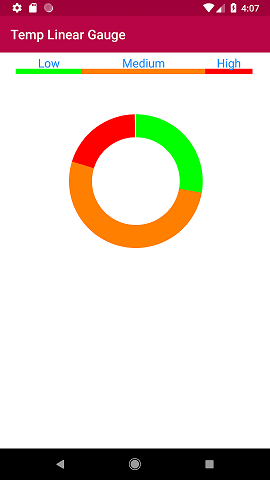

This control allows you to display information in the form of ranges, and decide whether you want to show it using linear or circular gauges. When you enter a variable of string type and change the value of the Control Type property to SD Linear Gauge, GeneXus automatically generates a new SDT called GaugeSDT, which is divided by properties and values that will affect the control as a whole; the same applies to each range.
Ranges (applicable to each range):
Sample:Now you will place a variable of string type in your Panel for Smart Devices and will change the Control Type property to SD Linear Gauge (variable called &LineGauge in this example).  Note that changing the GeneXus control type will change the preview of the object. The image shown in the layout is merely illustrative. In the Refresh event, you will load the data. In this case, it will be provided by a Data Provider (called LoadData in the example). It will have the following structure:
GaugeSDT
{
MaxValue = 100
MinValue = 0
Value = 35
Height = 8
ShowMinMax = False
ShowValue = True
Ranges
{
Range
{
Color = '#00FF00'//Green
Name = 'Low'
Length = 28
}
Range
{
Color = '#FF8000'//Orange
Name = 'Medium'
Length = 52
}
Range
{
Color = '#FF0000' //Red
Name = 'High'
Length = 20
}
}
}
Following the same line and reusing the returned data you will change 2 properties of the control (Thickness and Type) to display the same information but using the circular type (variable &CircularGauge). The code is as shown below:
Event Refresh
//Linear Gauge
&GaugeSDT = LoadData()
&LineGauge = &GaugeSDT.ToJson()
//Circular Gauge
&GaugeSDT.Type = 'Circular'
&GaugeSDT.Thickness = 35
&CircularGauge = &GaugeSDT.ToJson()
Endevent
 The Animated and Animated Duration properties of the Attribute class apply to this control, generating an animation that will be displayed when loading the view where it is located.
|